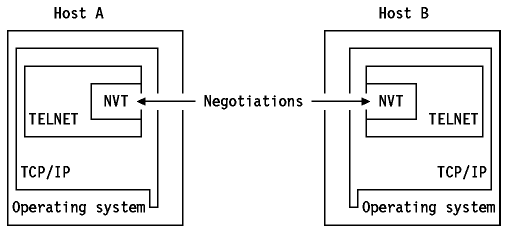

Table of Contents
Table of Contents  Client/Server
Model
Client/Server
ModelTable of Contents Client/Server
Model
TELNET is a standard protocol with STD number 8. Its status is recommended. It is described in RFC 854 - TELNET Protocol Specifications and RFC 855 - TELNET Option Specifications.
The TELNET protocol provides a standardized interface, through which a program on one host (the TELNET client) may access the resources of another host (the TELNET server) as though the client were a local terminal connected to the server.
For example, a user on a workstation on a LAN may connect to a host attached
to the LAN as though the workstation were a terminal attached directly to the
host. Of course, TELNET may be used across WANs as well as LANs.
Figure: Remote Login using TELNET - TELNET allows the LAN-attached
user to log in the same way as the local terminal user.
Most TELNET implementations do not provide you with graphics capabilities.
TELNET protocol is based on three ideas:
The two hosts begin by verifying their mutual understanding. Once this
initial negotiation is complete, they are capable of working on the minimum
level implemented by the NVT. After this minimum understanding is achieved,
they can negotiate additional options to extend the capabilities of the NVT to
reflect more accurately the capabilities of the real hardware in use. Because
of the symmetric model used by TELNET, both the host and the client may propose
additional options to be used.

Figure: The Symmetric TELNET Model - The negotiations start on the
NVT basis.


There is an extensive set of TELNET options, and the reader should consult
STD 1 - Official Internet Protocol Standards for the standardization
state and status for each of them. At the time of writing, the following
options were defined:

Table: TELNET Options (Part 1 of 2)

Table: TELNET Options (Part 2 of 2)
All of the standard options have a status of recommended and the
remainder have a status of elective. There is an historic version
of the TELNET Environment Option which is not recommended; it is TELNET
option 36 and was defined in RFC 1408.
Full-screen TELNET is possible provided the client and server have compatible full-screen capabilities. For example, VM and MVS provide a TN3270-capable server. To use this facility, a TELNET client must support TN3270.
The Interpret As Command (IAC) character is followed by a command code. If
this command deals with option negotiation, the command will have a third byte
to show the code for the referenced option.
Figure: Internal TELNET Command Structure - This command proposes
negotiation about terminal type.


The terminal types are defined in STD 2 - Assigned Numbers.
The primary goal of the TELNET protocol is the provision of a standard interface for hosts over a network. To allow the connection to start, the TELNET protocol defines a standard representation for some functions:
The TELNET client is a CMS program, that is, you must log on to a VM user ID running CMS to use it. The TELNET server runs in the TCP/IP virtual machine and uses the *CCS System service to create logical terminals for incoming TELNET clients. VTAM (GCS) is not required to use the TELNET protocol on a VM system.
When you use the TELNET command to connect to a host, you have to choose the mode of operation. Line mode or transparent mode are the two possibilities. In line mode you will be connected as a start-stop TTY terminal. In transparent mode, the TELNET command supports IBM 3270-type display stations. Examples of stations are:
The mode of operation depends on the ability of both hosts to agree on a terminal type.The translation tables used to convert EBCDIC data to ASCII do not always include desired characters. This becomes evident when you use the National Language Support Option (NLS) with your operating system. TCP/IP for VM provides standard tables. If needed, you can create and customize your own translate tables, without having to recompile the source. The TELNET CLIENT function only works in 7-bit mode. For more details, please refer to IBM TCP/IP Version 2 Release 3 for VM: Planning and Customization.
TELNET ( foreignhost ( portnumber ))(( linemode ) translate filename ))
For more details, please refer to IBM TCP/IP Version 2 Release 3 for VM: User's Guide.
TELNET provides:
When a 3270 connection is established, the MVS TELNET server allows you to choose which VTAM application a client will be automatically connected to (usually this default application is a network solicitor). If you want the incoming users to be able to choose between different VTAM applications (that is, you do not specify a default application), the TELNET server will ask for the application name. It is possible to restrict the use of an application to some users (or none) and to have logical units (LU) reserved for some specific users.
USS message 10 support provides the ability to emulate the VTAM USS message 10 support. You may define one or more USS message 10 screens. The actual USS message 10 screen to be used for a TELNET session can be selected via the LU mapping functions.
The IP-address-to-LU-name mapping function provides for the selection of both an LU type 2 name and an application screen (or USS message 10 screen) for incoming TELNET sessions. The selection is made by the following:
3270 DBCS transform mode provides 3270 full-screen emulation where the 3270 protocol processing is performed entirely by IBM TCP/IP for MVS. The remote TELNET client may be emulating either a VT100 or VT282 type terminal.
The TELNET server also provides user accounting and control information using the MVS SMF (System Management Facility) records. For example, client identity, IP address, timestamp of LOGON and LOGOFF and VTAM LU can be recorded.
A standard record type (SMF record type 118) has been registered.
The console operator may now query the status of active or inactive LUs in use by the TELNET server.
The user set option permits the user to control the number of TCP connections or UDP ports that may be open at one time.
With this option the line mode client is able to bypass the ASCII to EBCDIC translation.
VTAM and TSO (refer to IBM TCP/IP Version 3 Release 1 for MVS: Customization and Administration Guide for more details about the requirements) are required to use TELNET (both client and server).
The capabilities of the TELNET function under MVS are the same as under VM.
A programmable workstation may use either a TN3270 client or an rlogin client to reach OpenEdition MVS services.
The OS/400 TELNET provides both client and server functions. The OS/400 TELNET supports negotiations of the data transmission in one of the following four operating modes: VT100 full-screen mode, ASCII line mode, 5250 full-screen mode (see RFC 1205 for details) or 3270 full-screen mode.
Although the AS/400 TELNET server supports VT100 clients, this is not the preferred mode to use. A TN3270 or TN5250 client is preferred. The VT100 terminal is a character mode device, while the OS/400 is a block mode system. In general, this results in larger amount of overhead associated with the transmission of each VT100 keystroke. In contrast, the 5250 or 3270 block devices buffer all keystrokes at the client system until an Attention Identifier (AID) key is pressed.
The OS/400 VT100 server requires the VT100 client to have the autowrap option turned on. The Change Keyboard Map (CHGKBDMAP) and the Set Keyboard Map (SETKBMAP) commands are available for keyboard remapping.
ASCII line mode is the standard TELNET network virtual terminal (NVT) support and is assumed when 5250 full-screen mode or 3270 full-screen mode cannot be negotiated. The client ASCII line mode provides one input line and several scrollable output lines. Since the OS/400 operates in full-screen mode and has screens with multiple input fields, this ASCII line mode TELNET server implementation has several considerations. For example, a sign-on screen for the AS/400 system is not automatically displayed when ASCII line mode is negotiated. Please refer to AS/400 TCP/IP Guide for details.
5250 full-screen support can only be satisfactorily negotiated with a TELNET application running on a system that supports 5250 TELNET. The client support is similar to the OS/400 display station pass-through between two OS/400 systems. A TELNET user at the client OS/400 will receive an OS/400 5250 sign-on display from the server system and will be able to run applications on the remote system as if the display were locally attached to the server.
The OS/400 server TELNET requires virtual controllers and devices (which are automatically created by the system) to direct output on the client system. OS/400 server TELNET must be allowed to automatically configure virtual controllers and 5250 or 3270 devices.
3270 full-screen support is negotiated with any TELNET application that supports 3270 TELNET. The TELNET user at the local OS/400 receives a 3270 logon screen (for example, a VM logo screen) and is able to run applications on the 3270 host as if his display were locally attached. The 3270 TELNET server support allows the IBM S/370 family systems and non-AS/400 systems client TELNET users to sign on and run OS/400 5250 full-screen applications as if they were locally attached to the AS/400. Automatic configuration of controllers and devices is allowed. The OS/400 3270 full-screen mode TELNET server supports 3270 extended attributes, 3270-to-5250 keyboard re-mapping and workstation type negotiations.
AIX for RISC System/6000 supports both the TELNET client and server functions.
The following options are supported:
The telnetd server (also know as a daemon) is a subserver controlled by the inetd subsystem (also known as the super daemon).
The telnet command is identical to the tn and the TN3270 commands. It operates in two different modes:
When the telnet command is issued without arguments, it enters the command mode. The user may enter telnet subcommands.
When the telnet command is issued with arguments, it performs an open subcommand with those arguments and then enters input mode. The type of input mode is either character-at-a-time or line-by-line, depending on what the remote system supports.
The terminal-type negotiation will take place between the telnet command and the remote system when none of the following is used:
The rlogin command and the rlogind server (daemon) can also be used if both the local and the target hosts are AIX (or UNIX) systems. The rlogin and rlogind programs are considered as not-trusted because the remote host does not require password authentication when one or both of the following conditions is satisfied:
Since rlogin and rlogind are considered as not-trusted, they can be disabled by running the securetcpip command. The securetcpip command is used to enable additional TCP/IP security environment by disabling commands that are not trusted. The telnet command and the ftpd daemon are considered as trusted command and daemon, respectively. For more details, please refer to AIX Version 3.2 for RISC System/6000 Communication Concepts and Procedures.
AIX/ESA supports both client and server TELNET functions.
The TELNET server supports the following options: binary, echo/no echo, suppress go ahead, timing mark and terminal type.
The client function is implemented by the telnet and TN3270 commands. It operates in two modes: command mode and input mode. The type of input mode used is either character-at-a-time or line-by-line.
If an HFT terminal is being used (the terminal supports the High-Function Terminal driver such as the PS/2 console), TELNET can emulate either a DEC VT100 terminal or an IBM 3270 terminal. The 3270 terminal types supported are: 3277-1, 3278-1, 3278-2, 3278-3, 3278-4 and 3278-5. If TELNET 3270 mode command is being used with a color display, then 3279 terminal type is supported.
In addition, the rlogin command can also be used to log into an AIX/ESA or AIX/ESA-compatible system, if your local system is listed in the /etc/hosts.equiv file on the remote system, or your system and your user name are listed in the .rhosts file in your home directory on the remote system.
Note: Any login operation is subject to the AIX/ESA security features in effect. For more details, please refer to AIX/ESA Security Features User's Guide.
TCP/IP for OS/2 supports the following ASCII-based TELNET clients: TelnetPM, Telnet, Ansiterm, Telneto. The terminal types supported by these clients are VT220, VT100, ANSI, HFT and NVT. Supported 3270 terminal emulator TELNET clients are: PMANT, 3270 TELNET (PM) and TN3270. In addition, TN5250, which provides a PM-based 5250 emulation client, is supported.
This implements a superset of VT100, since it supports all 12 function keys instead of just four.
This is equivalent to VT200 in protocol support, and implements linemode capabilities as defined in RFC 1184.
PMANT is an OS/2 Presentation Manager application which allows for keyboard remapping, VIO font selections, terminal screen size definitions (24x80, 32x80, 43x80, 27x132), extended colors support, extended highlighting support and OS/2 clipboard support.
TN3270 is a text application running under either an OS/2 window or full-screen session. It is similar to PMANT but does not include the Presentation Manager interface. TN3270 is recommended in lieu of PMANT when using TCP/IP for OS/2 over slower serial lines, such as SLIP. It supports keyboard remapping, alternative screen sizes and extended colors. Selectable fonts and copy to clipboard are also supported in an OS/2 window session. It only supports 80-column screens.
For any terminal type, a TELNET server must be running on the foreign host that supports that specific terminal type.
TCP/IP V2.0 for OS/2 can be a TELNET server, supporting VT220, VT100, ANSITERM or TN clients. Note that TELNET users that log into an OS/2 TELNET server have the capability of running any applications with the exception of OS/2 Presentation Manager (PM) applications.
TCP/IP for DOS does not provide a TELNET Server implementation.
The SETTERM command allows the configuration of a DOS TELNET client. This program is menu driven and allows the following settings:
The modifications are stored in an ASCII file which can be referenced when the TELNET command is issued. It is possible to have different configuration files for different settings.
TELNET offers four terminal emulators:
Windows TELNET offers six terminal emulators:
The terminal preference is generally handled through the SETTERM command but it can be specified with the TELNET command. All the TELNET sessions must be opened from a full-screen window.
TELNET provides a menu-driven interface that makes it easy to supply the information needed to begin a TELNET session.
When you TELNET to a remote host from a DOS workstation, at the same time you can initiate the TFTP server. Then from the remote host, you will be able to execute a TFTP session between that host and the PC running DOS. When a file transfer request is detected, the TFTP Request menu is displayed. You can now decide the appropriate action to take (accept this transfer, deny this transfer, accept all future transfers, deny all future transfers). TELNET also allows you to temporarily go back to a DOS shell.
 Trivial
File Transfer Protocol (TFTP)
Trivial
File Transfer Protocol (TFTP)